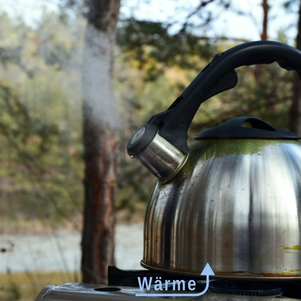
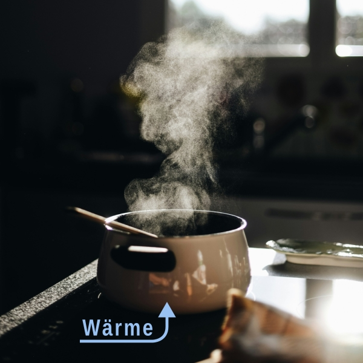

\gdef\sub#1{_{\mathrm{#1}}} \gdef\unit#1{\mathrm{#1}} \gdef\celsius{\unit{°C}} \gdef\gram{\unit{g}} \gdef\joule{\unit{J}} \gdef\kelvin{\unit{K}} \gdef\kilogram{\unit{kg}} \gdef\liter{\unit{L}} \gdef\milliliter{\unit{mL}} \gdef\meter{\unit{m}} \gdef\mole{\unit{mol}} \gdef\newton{\unit{N}} \gdef\pascal{\unit{Pa}} \gdef\kilojoule{\unit{k}\joule} \gdef\squaremeter{\meter^2} \gdef\cubicmeter{\meter^3} \gdef\newtonperkilogram{\frac{\newton}{\kilogram}} \gdef\joulepermole{\frac{\joule}{\mole}} \gdef\jouleperkilogram{\frac{\joule}{\kilogram}} \gdef\jouleperkelvin{\frac{\joule}{\kelvin}} \gdef\jouleperkilogramperkelvin{\frac{\joule}{\kilogram\,\kelvin}} \gdef\joulepermoleperkelvin{\frac{\joule}{\mole\,\kelvin}} \gdef\kilojouleperkilogram{\frac{\kilojoule}{\kilogram}} \gdef\kilojouleperkelvin{\frac{\kilojoule}{\kelvin}} \gdef\kilojouleperkilogramperkelvin{\frac{\kilojoule}{\kilogram\,\kelvin}} \gdef\kilojoulepermoleperkelvin{\frac{\kilojoule}{\mole\,\kelvin}}
Arbeitsaufträge
Bevor Du loslegst, rufe Dir die Anforderungen für Biologieaufgaben in Stufe 10 ins Gedächtnis. Reiche die Antworten als digitales Dokument ein und verwende eine leserliche Schrift, falls Du ein handgeschriebenes Dokument einreichst. Stufe I ist auf E Niveau, Stufe II ist auf E/A Niveau, Stufe III ist komplett auf A Niveau angesiedelt. Die Gesamtpunktzahl berechnet sich aus allen Aufgaben ohne Multiplikatoren. Die Multiplikatoren sind 1 für Stufe I, 2 für Stufe II, und 3 für Stufe III.
1 Stufe I
1.1 Änderung der inneren Energie
Wie kann die innere Energie eines Systems grundsätzlich geändert werden? Gib eine Gleichung dafür an und beschreibe die einzelnen Variablen mit ihren Einheiten.
[7 Punkte; Sieben von sieben möglichen Aussagen unter Einbeziehung von Fachsprache sind möglich.]
1.2 Änderung der inneren Energie - isoliertes System
Wie kann die innere Energie eines isolierten Systems geändert werden? Drücke das mathematisch aus.
[3 Punkte; Drei von drei möglichen Aussagen unter Einbeziehung von Fachsprache sind möglich.]
1.3 Änderung der inneren Energie - geschlossenes System
Wie kann die innere Energie eines geschlossenen Systems geändert werden? Drücke dies mathematisch aus.
[3 Punkte; Drei von drei möglichen Aussagen unter Einbeziehung von Fachsprache sind möglich.]
1.4 Teekessel und offener Topf
Beschreibe mit Deinen eigenen Worten, warum der Teekessel anfängt zu pfeifen. Warum könnte das bei einem offenen Topf nicht passieren.


[6 Punkte; Sechs von neun möglichen Punkten unter Einbeziehung von Fachsprache sind möglich.]
1.5 Beschreibung der Enthalpie
Was ist die Enthalpie? Beschreibe was sie ist oder warum sie eingeführt werden musste?
[4 Punkte; Vier von fünf möglichen Aussagen unter Einbeziehung von Fachsprache sind möglich.]
1.6 Allgemeine Änderung der Enthalpie
Wie ändert sich die Enthalpie grundsätzlich? Grundsätzlich heisst im Allgemeinen und unabhängig von der Art des Systems? Drücke dies mathematisch aus in einer Gleichung, benenne die Variablen und gib ihre Einheit an.
[7 Punkte; Sieben von sieben möglichen Aussagen unter Einbeziehung von Fachsprache sind möglich.]
1.7 Unterschied zwischen Änderung der Enthalpie und der inneren Energie
Wie unterscheidet sich die Änderung der Enthalpie von der Änderung der inneren Energie bei konstantem Druck? Erkläre anhand der Gleichung, die den Unterschied zeigt. Erläutere weiterhin, wann die Verwendung der Enthalpieänderung sich stark von der Änderung der inneren Energie unterscheidet.
[Du kannst 5 Punkte von 6 möglichen Aufgabenpunkten bekommen. Punkte werden für Aussagen nur unter Einbeziehung und Beachtung von Fachsprache vergeben.]
1.8 Die Größe der Enthalpie bei konstantem Druck
Gib die Gleichung wieder, die die Größe der Enthalpie bei konstantem Druck angibt. Benenne alle Variablen und gib ihre Einheiten an.
[Du kannst 6 Punkte von 6 möglichen Aufgabenpunkten bekommen. Punkte werden für Aussagen nur unter Einbeziehung und Beachtung von Fachsprache vergeben.]
1.9 Arten von Reaktionen bei konstantem Druck
Betrachte ein offenes System unter konstantem Druck; also offen zur Atmosphäre. Welche Arten von Enthalpieänderungen sind grundsätzlich möglich? Beschreibe sowohl schriftlich als auch mathematisch die Art der Änderung.
[Du kannst 6 Punkte von 8 möglichen Aufgabenpunkten bekommen. Punkte werden für Aussagen nur unter Einbeziehung und Beachtung von Fachsprache vergeben.]
1.10 Definition der Standardenthalpie
Wie ist die Standardenthalpie definiert.
[Du kannst 3 Punkte von 4 möglichen Aufgabenpunkten bekommen. Punkte werden für Aussagen nur unter Einbeziehung und Beachtung von Fachsprache vergeben.]
1.11 Definition der Standardenthalpieänderung
Wie ist die Standardenthalpie definiert?
[Du kannst 3 Punkte von 5 möglichen Aufgabenpunkten bekommen. Punkte werden für Aussagen nur unter Einbeziehung und Beachtung von Fachsprache vergeben.]
1.12 Auf Masse und Molanzahl bezogene Standardenthalpieänderungen
Was ist die spezifische und die molare Standardenthalpieänderung? Wie können beide zur Berechnung der Gesamtenthalpieänderung verwendet werden?
[Du kannst 6 Punkte von 8 möglichen Aufgabenpunkten bekommen. Punkte werden für Aussagen nur unter Einbeziehung und Beachtung von Fachsprache vergeben.]
1.13 Wärmekapazität
Beschreibe wie die Wärmeenergie mit der Wärmekapazität und der Temperaturzunahme zusammenhängt. Gib eine sprachliche als auch ein mathematische Definition an. Bei der mathematischen Definition benennst Du alle Variablen und gibst ihre Einheit an.
[Du kannst 8 Punkte von 10 möglichen Aufgabenpunkten bekommen. Punkte werden für Aussagen nur unter Einbeziehung und Beachtung von Fachsprache vergeben.]
1.14 Auf Masse und Molanzahl bezogene Wärmekapazität
Was ist die spezifische und die molare Wärmekapazität? Wie können beide zur Berechnung der Gesamtwärmekapazität verwendet werden?
[Du kannst 10 Punkte von 10 möglichen Aufgabenpunkten bekommen. Punkte werden für Aussagen nur unter Einbeziehung und Beachtung von Fachsprache vergeben.]
2 Stufe II
2.1 Heben von einer Masse
Du hebst eine Masse von m = 1\,\kilogram um h = 10\,\meter. Welche Energie brauchst Du, um dies zu bewältigen? Rechne mit der Erdbeschleunigung g = 10\,\newtonperkilogram. Wem geht diese Energie verloren?
[Du kannst 10 Punkte von 10 möglichen Aufgabenpunkten bekommen. Punkte werden für Aussagen nur unter Einbeziehung und Beachtung von Fachsprache vergeben. Ergebnis: 100\,\joule.]
2.2 Schmelzen einer Menge Wasser I
Du möchtest einen Kilogramm Wassereis bei 25\,\celsius komplett zu flüssigem Wasser schmelzen. Die Standardschmelzenthalpie von Wasser beträgt \Delta H^{\circ}_m = 333.55\;\kilojouleperkilogram
- Welche Enthalpieänderung ist notwendig?
- Welcher Reaktionstyp liegt hier vor? Warum?
- Woher kommt die benötigte Energie?
Du kannst 12 Punkte von 12 möglichen Aufgabenpunkten bekommen. Punkte werden für Aussagen nur unter Einbeziehung und Beachtung von Fachsprache vergeben. Ergebnis: 1. 333.55\,\kilojoule, 2. und 3. musst Du selbst herausfinden.
2.3 Schmelzen einer Menge Wasser II
Du möchtest zehn Gramm Wassereis bei 25\,\celsius komplett zu flüssigem Wasser schmelzen. Die spezifische Standardschmelzenthalpie von Wasser beträgt \Delta H^{\circ}_m = 333.55\;\kilojouleperkilogram. Welche Enthalpieänderung ist notwendig?
Du kannst 8 Punkte von 8 möglichen Aufgabenpunkten bekommen. Punkte werden für Aussagen nur unter Einbeziehung und Beachtung von Fachsprache vergeben. Ergebnis: 1. 3.33\,\kilojoule.
2.4 Verdampfen einer Menge Wasser
Du möchtest m = 8\,\gram Wasser bei 25\,\celsius komplett in Dampf überführen. Die spezifische Standardschmelzenthalpie zum Verdampfen von Wasser beträgt \Delta H^{\circ}_m = 2257\;\kilojouleperkilogram
- Welche Enthalpieänderung ist notwendig?
- Welcher Reaktionstyp liegt hier vor? Warum?
- Woher kommt die benötigte Energie?
Du kannst 12 Punkte von 12 möglichen Aufgabenpunkten bekommen. Punkte werden für Aussagen nur unter Einbeziehung und Beachtung von Fachsprache vergeben. Ergebnis: 1. 18\,\kilojoule, 2. und 3. musst Du selbst herausfinden.
2.5 Erwärmen von Wasser
Du möchtest m = 15\,\gram Wasser bei 25\,\celsius um einen Grad erwärmen. Die spezifische Wärmekapazität von Wasser C_{p,m} = 4200\;\kilojouleperkilogramperkelvin.
- Welche Enthalpieänderung ist notwendig?
- Welcher Reaktionstyp liegt hier vor? Warum?
- Woher kommt die benötigte Energie?
Du kannst 12 Punkte von 12 möglichen Aufgabenpunkten bekommen. Punkte werden für Aussagen nur unter Einbeziehung und Beachtung von Fachsprache vergeben. Ergebnis: 1. 63\,\kilojoule, 2. und 3. musst Du selbst herausfinden.
2.6 Abkühlen von Wasser
Du möchtest m = 9\,\gram Wasser bei 25\,\celsius um einen Grad kühlen. Die spezifische Wärmekapazität von Wasser C_{p,m} = 4200\;\kilojouleperkilogramperkelvin.
- Welche Enthalpieänderung ist notwendig?
- Welcher Reaktionstyp liegt hier vor? Warum?
- Woher kommt die benötigte Energie?
Du kannst 12 Punkte von 12 möglichen Aufgabenpunkten bekommen. Punkte werden für Aussagen nur unter Einbeziehung und Beachtung von Fachsprache vergeben. Ergebnis: 1. -38\,\kilojoule, 2. und 3. musst Du selbst herausfinden.
3 Stufe III
3.1 Unterschied Enthalpie-innere Energie
Bei einer Verbrennung von Glucose unter freiem Himmel und bei konstantem Druck p = 101325\;\pascal entsteht ein Liter 1\,\liter des Gases \ce{CO2}.
- Was ist dabei der Unterschied zwischen der Abnahme der Enthalpie und der inneren Energie?
- Vergleiche das mit der dabei enstandenen Enthalpieänderung von \Delta H \approx -21\,\kilojoule; zum Beispiel als Prozentwert.
- Welcher Reaktionstyp liegt hier vor? Warum?
- Wo geht die Differenz dieser beiden Energien hin?
- Berechne wie die Änderung der inneren Energie gewesen sein muss, damit dieser Unterschied herauskommt?
[Du kannst 39 Punkte von 39 möglichen Aufgabenpunkten bekommen. Punkte werden für Aussagen nur unter Einbeziehung und Beachtung von Fachsprache vergeben. Ergebnis: a. 101\,\kilojoule, b. 0.5\,\%, c. und d. Das musst Du herausfinden.]
3.2 Finde die ursprüngliche Temperatur heraus
Du hast eben m = 23\,\gram Wasser erwärmt und die Endtemperatur ist T\sub{Ende} = 343\,\kelvin. Die aufgewendete Energie ist \Delta H^{\circ} = 4347\,\kilojoule. Die spezifische Wärmekapazität von Wasser C_{p,m} = 4200\;\kilojouleperkilogramperkelvin.
- Was war die ursprüngliche Temperatur des Wassers?
- Welcher Reaktionstyp liegt hier vor? Warum?
- Woher kommt die benötigte Energie?
Du kannst 12 Punkte von 12 möglichen Aufgabenpunkten bekommen. Punkte werden für Aussagen nur unter Einbeziehung und Beachtung von Fachsprache vergeben. Ergebnis: 1. 298\,\kelvin, 2. und 3. musst Du selbst herausfinden.
4 Gesamtpunktzahl
Es gibt insgesamt 129 Punkte.